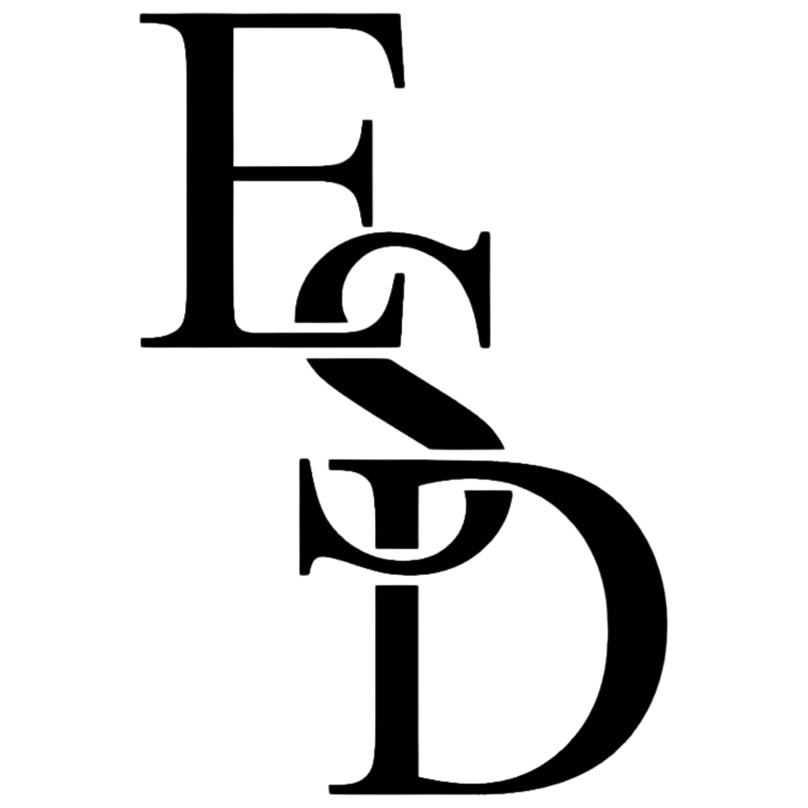
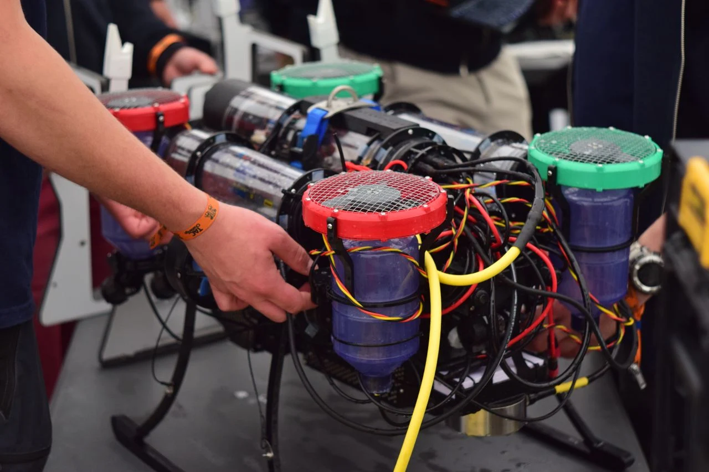
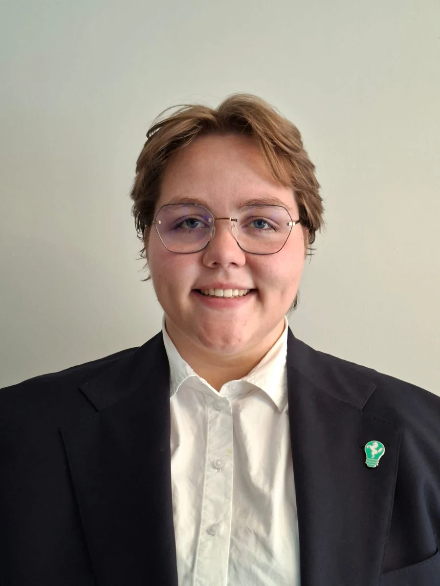

01 / TEAMPROJECT / QUEST / 2026
Een onderwaterrobot helpen waarnemen.
Beeldherkenning, live camerabeelden en sensorgegevens voor Aurora, de onderwaterrobot van HU Robosub.
Bekijk het project ↗
PORTFOLIO / ELEKTROTECHNIEK
Hoi, ik ben Emma. Ik verbind hardware en software — van een besturing voor klimaatinstallaties tot beeldherkenning onder water.

01 / Aurora / HU RoboSub↗EEN SELECTIE VAN MIJN WERK
Projecten en ervaringen waarin techniek, samenwerking en de praktijk samenkomen.
01 / TEAMPROJECT / QUEST / 2026
Beeldherkenning, live camerabeelden en sensorgegevens voor Aurora, de onderwaterrobot van HU Robosub.
Bekijk het project ↗02 / STAGE / GOOILAND ELEKTRO / 2025
Van hardwareonderzoek tot een werkende opstelling met temperatuurregeling en een bedieningsscherm.
Bekijk het project ↗03 / STUDIEPROJECT / FACTORY AUTOMATION
Van palletaanvoer tot het stapelen van lege pallets: ontdek het ontwerp van de fabriekslijn en bekijk de installatie in 3D.
Bekijk het project ↗04 / BESTUURSJAAR / INGENIUM CABO BIANCI / 2025–2026
Partners verbinden met studenten, twee netwerkdagen organiseren en onderhandelen over partnercontracten bij Ingenium Cabo Bianci.
Bekijk mijn bestuursjaar ↗OOK AAN GEWERKT
Een studieproject waarin het ontwerpen, bouwen en regelen van een robot samenkwamen.

OVER MIJ
Ik ben Emma Dullemond en studeer Elektrotechniek aan de Hogeschool Utrecht. Ik werk graag aan projecten waarin je niet alleen code schrijft of een schema tekent, maar ook ziet wat er gebeurt als je alles aansluit.
Mijn interesse ligt bij industriële automatisering en robotica. Ik vind het leuk om uit te zoeken waarom iets niet werkt, verschillende oplossingen te proberen en het resultaat met anderen verder te brengen.
CONTACT
Wil je meer weten over mijn projecten of praten over een afstudeeropdracht? Stuur me een bericht via LinkedIn.
Neem contact op ↗ LinkedIn GitHub ↗